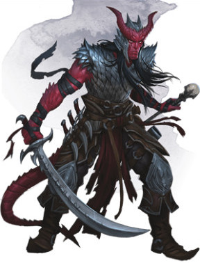
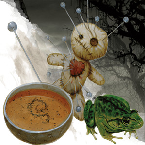

L'occultiste D&D 5 pour les nuls
Vous êtes un occultiste, le canal d'un être au pouvoir semblable à celui d'un dieu. Vous pouvez utiliser ce don incroyable en faveur du bien ou du mal. Vous pouvez l'utiliser à vos propres fins ou pour servir les fins impénétrables de votre patron surnaturel (ou pire encore, vous pouvez penser que vous suivez votre propre chemin alors qu'en réalité vous n'êtes qu'une marionnette dans les mains de votre patron). Votre pacte peut être conclu avec un fiélon, tel l'archidiable Asmodée ou le seigneur démon Orcus, un archifée, comme le roi Obéron ou la mystérieuse Reine de l'air et des ténèbres, ou un Grand Ancien, comme Cthulhu ou Tharizdun, le dieu enchaîné. Et il existe encore bien d'autres patrons d'occultiste, enfouis dans le temps et l'espace. Vous pouvez aussi travailler avec votre MD pour créer le patron idéal de votre occultiste.
Les occultistes sont des lanceurs de sorts, comme les magiciens ou les clercs, mais ils suivent des règles complètement différentes. Alors que les autres lanceurs de sorts ont la capacité Manifestations, les occultistes ont Magie de Pacte. Cela signifie que vous disposez seulement de quelques emplacements de sorts, mais vos sorts sont toujours lancés au plus haut niveau possible et vous récupérez vos emplacements de sorts après un repos court au lieu d'un repos long. Si vous avez un peu de temps entre les rencontres, vous pouvez donc lancer des sorts pratiquement toute la journée. Et que dire des sorts mineurs mis à part que vous possédez le plus puissant d'entre eux : décharge occulte.
De par leur façon particulière de lancer des sorts, les occultistes sont l'une des classes les plus complexes de D&D. Vous devez donc bien comprendre les règles générales de D&D et en particulier celles pour lancer des sorts avant de jouer un occultiste. L'occultiste est également un excellent choix de classe si vous voulez jouer un rôle mais ne savez pas par où commencer. En raison de leur pacte surnaturel, cette classe vous donne automatiquement de nombreuses opportunités pour cela. Lisez Brimstone Angels, les romans d'Erin M. Evans, et vous trouverez un excellent exemple d'occultiste avec la tieffelin Farideh qui entretient une relation avec son patron, le cambion Lorcan.
Si ce que vous venez de lire vous tente… faisons un pacte ! Le plus important pour jouer un personnage à D&D est que cela soit amusant pour vous et vos amis. Cependant, il existe certains principes de base que tout joueur devrait connaître pour jouer efficacement un occultiste. D&D est un jeu de groupe dans lequel plusieurs personnages aux capacités diverses contribuent au succès de leur équipe de différentes manières. Vous devez donc savoir comment jouer efficacement votre rôle au sein du groupe pour pouvoir aider votre équipe à avancer dans l'histoire de la campagne tout en développant votre propre histoire. Cette aide de jeu couvrira les bases de la magie occulte en vous guidant à travers les cinq premiers niveaux de l'occultiste.
Créer votre occultiste
 Sans aller jusqu'à parler d'optimisation, la première étape pour bien jouer votre classe est de construire votre personnage efficacement.
Sans aller jusqu'à parler d'optimisation, la première étape pour bien jouer votre classe est de construire votre personnage efficacement.
- Choisissez votre race. N'importe laquelle peut faire un bon occultiste, mais préférez celles qui améliorent votre valeur de Charisme. Le Charisme est votre caractéristique la plus importante car c'est elle qui détermine la puissance de vos sorts. Les tieffelins sont d'excellents occultistes en raison de leur bonus inné de +2 en Charisme et de leur accès à des sorts raciaux qui les aident à économiser leurs emplacements de sorts limités. Ce sont, à bien des égards, les occultistes types. Vous allez certainement jouer votre premier occultiste en choisissant cette race, mais vous pouvez toujours casser le moule en faisant un pacte avec un patron inhabituel comme un archifée. Les demi-elfes ont aussi un bonus de Charisme de +2, et il est facile de justifier qu'un demi-elfe qui a été exclu de la société humaine ou elfique cherche le pouvoir d'un patron d'Outremonde. Les humains sont un bon choix pour pratiquement toutes les classes et leur large éventail de bonus de caractéristique plaira aux occultistes qui veulent se battre de près, comme ceux du pacte de la Lame.
Quel type d'occultiste ?
L'occultiste est l'une des classes les plus complexes et les plus personnalisables de D&D. Bien qu'à priori similaires à d'autres lanceurs de sorts comme les magiciens ou les bardes, ils utilisent une méthode pour lancer des sorts complètement différente et offrent également des choix uniques avec leurs manifestations occultes. C'est donc une classe extrêmement flexible qui peut remplir à peu près tous les rôles dans une aventure, selon le choix du patron, du pacte et des manifestations. La première décision à prendre est de choisir votre patron d'Outremonde (aussi appelé sous-classe), une décision qui commencera à créer la niche thématique et mécanique de votre personnage.
Vous pouvez vous spécialiser dans un rôle offensif en choisissant des sorts et des manifestations qui renforcent vos sorts de dégâts et en vous fiant à vos alliés pour vous protéger lorsque vous êtes à court de jus. Vous pouvez également choisir un rôle défensif en gênant les ennemis avec des sorts de contrôle tout en vous protégeant de la magie. Le rôle de protecteur peut paraître étrange pour une classe de lanceur de sorts, mais vous pouvez prendre des décisions qui feront de vous un combattant suffisamment redoutable pour détourner le feu de vos alliés les plus vulnérables. Enfin, le soutien est également un rôle inhabituel pour un occultiste, mais vous pouvez choisir un patron et des sorts qui vous permettent d'améliorer et de soigner vos alliés au lieu de faire pleuvoir des coups sur vos ennemis.
Puisque vous choisissez votre sous-classe dès le niveau 1, vous n'aurez pas le temps de vous faire une idée de votre personnage et de la façon dont vous voulez le jouer avant de devoir choisir votre sous-classe. Heureusement pour vous, ce choix est intimement lié au concept de votre personnage et ne devrait donc pas être compliqué.
Offensif
Les occultistes offensifs canalisent toute leur puissance sous forme de sorts destructeurs et d'armes meurtrières, ne donnant que peu de considération à leur propre sécurité. Ceux qui concluent un pacte avec le Fiélon acquièrent des sorts qui renforcent cet archétype, ainsi que le puissant pouvoir de Traversée des enfers au niveau 14. Les occultistes qui se lient à la Lame maudite (Xanathar's Guide to Everything) préfèrent revêtir leur armure et attaquer les lignes de front, armés de leur lame surnaturelle.
Défensif
Les occultistes spécialisés dans la défense préfèrent se protéger tout en contrôlant le champ de bataille à l'aide de sorts qui manipulent les éléments, créent des illusions ou fendent l'espace lui-même. En tant que tels, ceux qui convoitent le pouvoir du Grand Ancien sont des lanceurs de sorts défensifs remarquables. Les occultistes qui servent l'Archifée possèdent des pouvoirs qui séduisent les combattants ennemis, les rendant vulnérables aux attaques de vos alliés tout en restant parfaitement à l'abri sous un voile d'invisibilité.
Protecteur
Un protecteur se tient debout face à de puissants ennemis et utilise son comportement menaçant pour détourner l'attention de ses alliés les plus vulnérables. Ces combattants ont tendance à porter une armure épaisse et à se vanter d'avoir de puissantes capacités défensives, deux caractéristiques que peu d'occultistes possèdent. Seuls ceux dotés de la puissance de la lame maudite possèdent la capacité de porter une armure intermédiaire et un bouclier, et leurs capacités de combat en face à face en font des cibles de choix sur le champ de bataille.
Soutien
Les occultistes bénis par un pacte avec un céleste possèdent une magie semblable à celle d'un clerc, ce qui leur confère de formidables capacités de guérison et de restauration. Ils possèdent également des pouvoirs uniques qu'ils peuvent utiliser contre les ennemis qui osent les attaquer, ce qui en fait une cible moins attrayante au combat, malgré leurs faibles défenses.
Créer votre occultiste - la suite
- Placez votre valeur de caractéristique la plus élevée en Charisme. Votre deuxième caractéristique la plus élevée dépend de votre rôle, mais vous pouvez aussi la placer où vous voulez.
- Si vous voulez remplir le rôle offensif et vous concentrer sur les dégâts infligés, placez votre deuxième caractéristique la plus élevée en Dextérité.
- Si vous voulez remplir le rôle défensif ou protecteur et vous concentrer sur le fait de survivre, placez votre deuxième caractéristique la plus élevée en Constitution.
- Si vous souhaitez remplir le rôle de soutien, placez votre deuxième caractéristique la plus élevée en Dextérité, ce qui vous aidera à compenser votre faible Classe d'Armure.
- Choisissez un historique qui colle avec le concept de votre personnage. C'est une opportunité pour être créatif ! Votre occultiste était-il l'acolyte d'un culte sombre, endoctriné depuis sa naissance ? Était-il un ermite qui voyait au-delà des étoiles ? Ou un enfant des rues qui a échangé le seul bien qu'il possédait, son âme, contre une chance d'échapper à la pauvreté pour se venger de ceux qui le méprisaient ?
- Enfin, déterminez votre équipement.
- Pour le choix entre une arme courante et une arbalète légère, choisissez une arme courante qui correspond à votre vision du personnage. Vous aurez décharge occulte pour le combat à distance.
- Il n'y a pas de réelles différences entre une sacoche à composantes et un focaliseur arcanique, alors choisissez celui qui correspond le mieux à votre personnage.
- Choisissez un sac d'érudit si vous envisagez de passer beaucoup de temps dans la civilisation, ou un sac d'exploration souterraine dans le cas contraire.
- Choisissez une autre arme courante.
Se battre comme un occultiste
Le combat est un acte délicat pour vous. Vous n'avez qu'un seul emplacement de sort au niveau 1, et vous devez donc l'utiliser au bon moment. Si vous envisagez de lancer un sort comme maléfice, ce devrait être le plus tôt possible, pour ensuite utiliser vos nombreux sorts mineurs afin d'infliger des dégâts. Même à plus haut niveau, vous devrez conserver vos ressources. Vous gagnez en effet un deuxième emplacement de sort au niveau 2, mais n'en gagnerez plus avant le niveau 11.
Tout comme les ensorceleurs et les bardes, vous apprenez de nouveaux sorts au fur et à mesure que vous progressez et pouvez lancer n'importe quel sort connu avec vos quelques emplacements de sorts. Cela vous différencie des classes de lanceurs de sorts comme les magiciens et les druides, qui ont accès à un large éventail de sorts mais qui doivent en préparer une liste à la fin d'un repos long. Vous avez également accès à un vaste éventail de sorts mineurs (en particulier avec le pacte du Grimoire au niveau 3) que vous pouvez lancer à volonté sans dépenser plus d'emplacements de sorts. Utilisez-les comme un guerrier utiliserait une épée ou une arbalète et conservez vos sorts plus puissants pour qu'ils fassent la différence.
Les occultistes ont de nombreuses décisions à prendre entre leur patron d'Outremonde, leur pacte et leurs manifestations occultes, mais la plus importante est le choix de leurs sorts. Voici donc une sélection de listes de sorts et de manifestations pour vous aider à faire les bons choix en fonction de votre rôle dans le groupe. Si vous constatez qu'un sort ne marche pas bien pour vous, vous pouvez échanger ce sort contre un autre chaque fois que vous gagnez un niveau dans cette classe. Mais vous ne pouvez échanger qu'un seul sort par niveau ; ne croyez pas que vous allez pouvoir changer toute votre liste de sorts à chaque changement de niveau. N'hésitez pas également à adapter ces listes de sorts en fonction de vos préférences personnelles, mais aussi en fonction du type de défis auxquels vous faites face dans votre campagne.
Au niveau 1, vous forgez un pacte avec un patron d'Outremonde. Ce choix vous aidera à déterminer votre rôle et vous accorde des pouvoirs supplémentaires tout au long de la campagne.
Au niveau 2, vous pouvez augmenter votre puissance arcanique avec les manifestations occultes. Ces manifestations soutiennent votre rôle dans le groupe et sont décrites ci-dessous. Vous gagnez également votre deuxième emplacement de sort, ce qui augmente considérablement votre flexibilité.
Au niveau 3, vous affinez le pacte que vous avez signé avec votre patron en choisissant une Faveur de pacte (pacte de la Lame, pacte de la Chaîne ou pacte du Grimoire). La faveur à choisir devrait dépendre en grande partie de votre rôle au sein du groupe, comme décrit ci-dessous.
Au niveau 4, vous gagnez Amélioration de caractéristiques ou un don. La plupart des occultistes souhaitent maximiser leur valeur de Charisme le plus rapidement possible pour augmenter la puissance de leurs sorts, mais vous pouvez aussi choisir un don pour accentuer votre rôle au sein du groupe.
Au niveau 5, vous accédez aux sorts de niveau 3. Cela représente une augmentation potentielle de puissance considérable. Les sorts à choisir dépendent de votre rôle.
Offensif
Les occultistes ont des emplacements de sorts limités, mais possèdent des manifestations qui renforcent leurs sorts mineurs et lancent automatiquement leurs sorts au plus haut niveau de puissance disponible. Ceci est particulièrement utile aux occultistes spécialisés dans la magie destructrice, comme ceux qui concluent un pacte avec le Fiélon ou la Lame maudite. Votre choix de patron vous octroie aussi des sorts supplémentaires, dont beaucoup sont essentiels à vos capacités offensives.
Au niveau 1, vous apprenez deux sorts mineurs de la liste des sorts d'occultiste. Vous ne pourrez plus les changer, alors choisissez-les judicieusement. Vous devriez choisir deux sorts mineurs offensifs afin d'avoir toujours une attaque à volonté sur laquelle vous appuyer. Décharge occulte est un must pour tous les occultistes, et lame aux flammes vertes est un bon choix pour un occultiste qui va au corps à corps. Sinon, envisagez un sort de courte portée comme bouffée de poison ou coup de tonnerre.
Toujours au niveau 1, vous apprenez deux sorts de niveau 1 de la liste de sorts d'occultiste. Maléfice est un sort essentiel de par sa durée. Notez que vous pouvez changer la cible de ce sort à tout moment, une fois sa cible initiale morte, si vous maintenez la concentration. Cela signifie que le sort peut persister entre les combats, surtout s'il est lancé à un haut niveau. Armure d'Agathys est également un choix judicieux, car il vous confère une capacité de survie accrue, des dégâts supplémentaires, et progresse bien avec le niveau.
Au niveau 2, vous apprenez un nouveau sort de niveau 1. Représailles infernales est un bon choix car il vous permet de continuer d'infliger des dégâts même si vous êtes sur la défensive. Vous avez également la possibilité de choisir deux manifestations occultes. Décharge déchirante est un must car elle augmente considérablement vos dégâts. L'autre manifestation devrait être une manifestation sociale, comme Mille visages, ou une manifestation pour l'exploration comme Vision du diable, afin de compléter vos compétences.
Au niveau 3, vous apprenez des sorts de niveau 2 de la liste de sorts d'occultiste. En outre, tous vos emplacements de sorts deviennent des emplacements de niveau 2. Si un sort est plus puissant s'il est lancé depuis un emplacement de niveau supérieur, il possède une section à la fin de sa description qui indique "Aux niveaux supérieurs". Vous apprenez un nouveau sort, comme fracassement.
Vous gagnez également une Faveur de pacte. Le pacte de la Lame est excellent pour les occultistes de la lame maudite ou tout autre occultiste qui veut se battre en mêlée. Le pacte du Grimoire sert aux occultistes qui préfèrent combattre à distance (il accorde trois sorts mineurs de n'importe quelle liste de sorts). Le pacte de la Chaîne vous octroie un puissant familier que vous pourrez utiliser pour explorer des zones dangereuses et vous aider en combat. Toutes ces faveurs sont utiles pour un rôle offensif de différentes manières, d'autant plus qu'elles permettent par la suite de débloquer des manifestations occultes spécifiques, mais le pacte de la Lame est par nature le plus offensif.
Étant donné que vous pouvez choisir une des manifestations que vous connaissez et la remplacer par une autre manifestation disponible à chaque changement de niveau, vous pouvez à ce niveau accéder aux manifestations spécifiques d'une faveur, comme Livre des secrets anciens ou Voix du maître des Chaînes.
Au niveau 4, vous gagnez Amélioration de caractéristiques ou un don. Si vous voulez augmenter vos chances d'infliger de plus grands dégâts, vous devriez mettre les deux points en Charisme. Si vous préférez un don qui augmente vos dégâts, pensez à Chanceux, Mage offensif ou Mage de guerre. Un occultiste de la lame maudite axé sur la Dextérité pourrait également aimer le don Spécialiste des armures intermédiaires.
Toujours au niveau 4, vous gagnez un sort supplémentaire. Pensez à prendre un sort qui améliore votre discrétion ou votre maniabilité, comme invisibilité. Vous apprenez également un sort mineur de la liste de sorts d'occultiste. Un sort mineur non axé sur le combat fera de vous un aventurier plus polyvalent.
Au niveau 5, vous apprenez des sorts de niveau 3 de la liste de sorts d'occultiste. En outre, tous vos emplacements de sorts deviennent des emplacements de niveau 3. Vol est un sort incroyablement puissant entre les mains d'un lanceur de sorts offensif, mais les occultistes qui souhaitent rester au sol peuvent trouver en toucher du vampire une option attrayante.
Toujours au niveau 5, vous gagnez une Manifestation occulte supplémentaire. Si vous choisissez le pacte de la Lame, Lame assoiffée sera surement votre meilleur choix. Maître des ombres est également un choix attrayant qui facilite grandement le saut sur des ennemis qui ne sont pas sur leurs gardes.
Défensif
Jouer la défense n'est pas seulement une question de rester en vie, il s'agit également de frustrer vos ennemis. Les sorts qui manipulent le champ de bataille ou embrouillent l'esprit de vos adversaires vous sont autant utiles que les sorts qui augmentent directement votre propre armure ou vos points de vie. Les occultistes qui concluent un pacte avec le Grand Ancien ou l'Archifée conviennent mieux à la défense. Votre choix de patron vous octroie aussi des sorts supplémentaires, dont beaucoup sont essentiels pour vos capacités défensives.
Au niveau 1, vous apprenez deux sorts mineurs de la liste des sorts d'occultiste. Vous ne pourrez plus les changer, alors choisissez-les judicieusement. Décharge occulte est un must pour tous les occultistes, mais vous pouvez aussi choisir un autre sort mineur pour rendre plus difficile la riposte de vos adversaires. L'effet secondaire de contact glacial (qui empêche une créature de regagner des points de vie) est étonnamment puissant.
Toujours au niveau 1, vous apprenez deux sorts de niveau 1 de la liste de sorts d'occultiste. Frayeur est excellent pour contrer la tactique de l'ennemi ou clouer sur place de puissants ennemis, et le sort évolue au fur et à mesure que vous progressez. Tentacules de Hadar est un sort déroutant et puissant qui peut à la fois infliger des dégâts et entraver les mouvements de vos ennemis.
Au niveau 2, vous apprenez un nouveau sort de niveau 1. Armure d'Agathys est également un choix judicieux, car il vous confère une capacité de survie accrue et des dégâts supplémentaires, et progresse bien avec le niveau. Vous avez également la possibilité de choisir deux manifestations occultes. Armure d'ombres est essentiellement une armure de mage permanente et Lance occulte vous permet de combattre à une distance incroyable. Les manifestations qui accordent à votre décharge occulte des pouvoirs qui influent sur le mouvement, comme Décharge répulsive, sont également des choix sympas pour contrôler le champ de bataille.
Au niveau 3, vous apprenez des sorts de niveau 2 de la liste de sorts d'occultiste. En outre, tous vos emplacements de sorts deviennent des emplacements de niveau 2. Si un sort est plus puissant s'il est lancé depuis un emplacement de niveau supérieur, il possède une section à la fin de sa description qui indique "Aux niveaux supérieurs". Vous apprenez un nouveau sort, comme immobilisation de personne ou image miroir.
Vous gagnez également une Faveur de pacte. Le pacte de la Lame n'est généralement pas votre meilleur choix. Le pacte du Grimoire est par contre utile car il vous donne trois sorts mineurs de n'importe quelle liste de sorts. Le pacte de la Chaîne vous octroie un puissant familier que vous pourrez utiliser pour explorer des zones dangereuses et vous aider en combat. C'est probablement le pacte qui vous sera le plus utile car votre familier vous aidera à rester éloigné des situations dangereuses et il vous permettra de débloquer plus tard des manifestations occultes fortes utiles.
Étant donné que vous pouvez choisir une des manifestations que vous connaissez et la remplacer par une autre manifestation disponible à chaque changement de niveau, vous pouvez à ce niveau accéder aux manifestations spécifiques d'une faveur, comme Livre des secrets anciens ou Voix du maître des Chaînes.
Au niveau 4, vous gagnez Amélioration de caractéristiques ou un don. Si vous voulez augmenter vos chances d'infliger de plus grands dégâts, vous devriez mettre les deux points en Charisme. Si vous préférez un don, pensez à Chanceux, Mage offensif ou Mage de guerre.
Toujours au niveau 4, vous gagnez un sort supplémentaire. Pensez à prendre un sort qui améliore votre discrétion ou votre maniabilité, comme invisibilité. Vous apprenez également un sort mineur de la liste de sorts d'occultiste. Un sort mineur non axé sur le combat fera de vous un aventurier plus polyvalent.
Au niveau 5, vous apprenez des sorts de niveau 3 de la liste de sorts d'occultiste. En outre, tous vos emplacements de sorts deviennent des emplacements de niveau 3. Vol vous octroie un contrôle aérien considérable sur le champ de bataille et contresort portera la peur au cœur des lanceurs de sorts ennemis.
Toujours au niveau 5, vous gagnez une Manifestation occulte supplémentaire. Lenteur de l'esprit vous permet de lancer le puissant sort de contrôle lenteur une fois par repos long en utilisant l'un de vos emplacements de sorts.
Protecteur
Il n'est pas facile pour un occultiste d'être un bon protecteur, cependant les capacités de la lame maudite permettent de relever le défi.
Au niveau 1, vous apprenez deux sorts mineurs de la liste des sorts d'occultiste. Vous ne pourrez plus les changer, alors choisissez-les judicieusement. Décharge occulte est un must pour tous les occultistes (même si vous choisissez de vous battre au corps à corps), mais vous pourriez choisir un autre sort mineur qui se combine bien avec vos attaques de corps à corps. Lame tonnante punit les ennemis qui tentent de vous échapper, ce qui en fait une option de premier choix.
Toujours au niveau 1, vous apprenez deux sorts de niveau 1 de la liste de sorts d'occultiste. Affliger un ennemi à la fois avec le sort maléfice et la malédiction de votre lame maudite est un combo dévastateur, bien que vous ne puissiez imposer qu'un seul de ces affaiblissements par tour, car les deux requièrent votre action bonus. Tentacules de Hadar est un sort déroutant et puissant qui peut à la fois infliger des dégâts et entraver les mouvements de vos ennemis, ce qui empêche les ennemis de vous échapper et d'attaquer vos alliés.
Au niveau 2, vous apprenez un nouveau sort de niveau 1. Armure d'Agathys est un choix judicieux car il vous confère une capacité de survie accrue et des dégâts supplémentaires, et le sort progresse bien avec le niveau. Vous avez également la possibilité de choisir deux manifestations occultes. Les manifestations de combat les plus puissantes sont accessibles à des niveaux supérieurs, alors pour le moment choisissez des manifestations sociales comme Présence captivante ou Mille visages.
Au niveau 3, vous apprenez des sorts de niveau 2 de la liste de sorts d'occultiste. En outre, tous vos emplacements de sorts deviennent des emplacements de niveau 2. Si un sort est plus puissant s'il est lancé depuis un emplacement de niveau supérieur, il possède une section à la fin de sa description qui indique "Aux niveaux supérieurs". Vous apprenez un nouveau sort, comme discours captivant ou rayon affaiblissant.
Vous gagnez également une Faveur de pacte. Le pacte de la Lame est de loin le meilleur choix pour vous, même si vous pouvez toujours choisir d'autres options.
Étant donné que vous pouvez choisir une des manifestations que vous connaissez et la remplacer par une autre manifestation disponible à chaque changement de niveau, vous pouvez à ce niveau accéder aux manifestations spécifiques d'une faveur et devriez échanger une de vos manifestations actuelles pour Arme de pacte améliorée pour obtenir instantanément une arme +1. De plus, vos bonus de Guerrier maudit s'appliquent désormais à tous les types d'arme que vous invoquez à l'aide de votre faveur du pacte de la Lame ; si vous voulez vous battre avec une arme à deux mains, vous pouvez le faire maintenant !
Au niveau 4, vous gagnez Amélioration de caractéristiques ou un don. Si vous voulez augmenter vos chances d'infliger de plus grands dégâts, vous devriez mettre les deux points en Charisme. Si vous préférez un don qui augmente vos dégâts, pensez à Chanceux ou Mage de guerre. Le don Amateur d'armures lourdes vous donne la maîtrise des armures lourdes si vous souhaitez augmenter encore plus votre Classe d'Armure. Si vous êtes satisfait de votre armure intermédiaire et avez une Dextérité élevée, le don Spécialiste des armures intermédiaires vous rendra plus discret et pourrait améliorer votre CA en armure intermédiaire.
Toujours au niveau 4, vous gagnez un sort supplémentaire. Pensez à prendre un sort qui a plusieurs utilisations au combat, comme immobilisation de personne, ou un sort que vous pouvez combiner avec d'autres effets, comme ténèbres ou la manifestation Vision du diable. Vous apprenez également un sort mineur de la liste de sorts d'occultiste. Un sort mineur non axé sur le combat fera de vous un aventurier plus polyvalent.
Au niveau 5, vous apprenez des sorts de niveau 3 de la liste de sorts d'occultiste. En outre, tous vos emplacements de sorts deviennent des emplacements de niveau 3. Vol vous octroie un contrôle aérien considérable sur le champ de bataille.
Toujours au niveau 5, vous gagnez une Manifestation occulte supplémentaire. Lame assoiffée est pratiquement obligatoire car il vous accorde une attaque supplémentaire à chaque tour.
Soutien
Peu d'occultistes possèdent l'attitude appropriée pour le rôle de soutien. La plupart sont obsédés par le fait d'augmenter leur pouvoir à tout prix, mais ceux qui ont un cœur désintéressé peuvent conclure un pacte avec un céleste. Ces occultistes, peu communs, bénéficient de pouvoirs de guérison miraculeux et de combat.
Au niveau 1, vous apprenez deux sorts mineurs de la liste des sorts d'occultiste. Vous ne pourrez plus les changer, alors choisissez-les judicieusement. Décharge occulte est un must pour tous les occultistes, même en rôle de soutien. Pierre magique est sort mineur génial qui donne à vos alliés accès à des dégâts magiques à bas niveau, et prestidigitation est amusant à avoir sous la main.
Toujours au niveau 1, vous apprenez deux sorts de niveau 1 de la liste de sorts d'occultiste. Charme-personne est utile socialement. De même, frayeur vous permettra de parler avec la voix de terribles anges, répandant la peur chez vos ennemis.
Au niveau 2, vous apprenez un nouveau sort de niveau 1. Protection contre le mal et le bien est circonstanciel, mais puissant. Notez qu'il consomme de l'eau bénite qui coûte 25 po. Vous avez également la possibilité de choisir deux manifestations occultes. Armure d'ombres est essentiellement une armure de mage permanente et Lance occulte vous permet de combattre à une distance incroyable. Voleur des cinq destinées vous permet d'affaiblir vos ennemis en plus de soutenir vos alliés.
Au niveau 3, vous apprenez des sorts de niveau 2 de la liste de sorts d'occultiste. En outre, tous vos emplacements de sorts deviennent des emplacements de niveau 2. Si un sort est plus puissant s'il est lancé depuis un emplacement de niveau supérieur, il possède une section à la fin de sa description qui indique "Aux niveaux supérieurs". Vous apprenez un nouveau sort, comme immobilisation de personne ou image miroir.
Vous gagnez également une Faveur de pacte. Le pacte de la Lame n'est généralement pas votre meilleur choix pour un rôle de soutien, mais cette faveur peut briller si vous souhaitez franchir la ligne de démarcation entre soutien et offensif. Le pacte du Grimoire est par contre utile car il vous donne trois sorts mineurs de n'importe quelle liste de sorts. Le pacte de la Chaîne vous octroie un puissant familier que vous pourrez utiliser pour explorer des zones dangereuses et vous aider en combat. C'est probablement le pacte qui vous sera le plus utile car il vous permettra de débloquer plus tard des manifestations occultes fortes utiles.
Étant donné que vous pouvez choisir une des manifestations que vous connaissez et la remplacer par une autre manifestation disponible à chaque changement de niveau, vous pouvez à ce niveau accéder aux manifestations spécifiques d'une faveur.
Au niveau 4, vous gagnez Amélioration de caractéristiques ou un don. Si vous voulez augmenter vos chances d'affecter vos ennemis, vous devriez mettre les deux points en Charisme
Toujours au niveau 4, vous gagnez un sort supplémentaire. Pensez à prendre un sort qui améliore votre discrétion ou votre maniabilité, comme invisibilité, ou un sort comme rayon affaiblissant. Vous apprenez également un sort mineur de la liste de sorts d'occultiste. Un sort mineur axé sur le combat, comme coup de tonnerre, fera de vous un aventurier plus polyvalent.
Au niveau 5, vous apprenez des sorts de niveau 3 de la liste de sorts d'occultiste. En outre, tous vos emplacements de sorts deviennent des emplacements de niveau 3. Cercle magique peut protéger tout votre groupe de puissantes créatures surnaturelles.
Toujours au niveau 5, vous gagnez une Manifestation occulte supplémentaire. Armure d'ombres peut vous aider à augmenter votre capacité de survie, si vous l'avez trouvée insuffisante jusqu'à présent.
Personnaliser son occultiste
Cette aide de jeu est la plus longue de cette série, ce qui en dit long sur la polyvalence et le dynamisme de cette classe. Car si les occultistes ont la réputation d'être des personnages sinistres et assoiffés de pouvoir, il est tout à fait possible d'aller au-delà de cet archétype classique. Cette page ne fait en effet qu'effleurer les options mécaniques et de jeu de rôle qui s'offrent aux occultistes. Vous pouvez aussi vous inspirer de Farideh de la série Brimstone Angels, qui entretient une relation amoureuse avec son patron, par exemple.
Tout cela pour dire que vous pouvez faire à peu près n'importe quoi avec la classe d'occultiste, à condition d'être prêt à vous pencher sur les détails de ses mécaniques de jeu non conventionnelles. Je vous recommande fortement d'essayer en utilisant cette aide de jeu comme point de départ et en laissant ensuite libre cours à votre imagination.
Allez négocier le pacte avec votre patron maintenant !
Basé sur un article de James Haeck, traduit par blueace